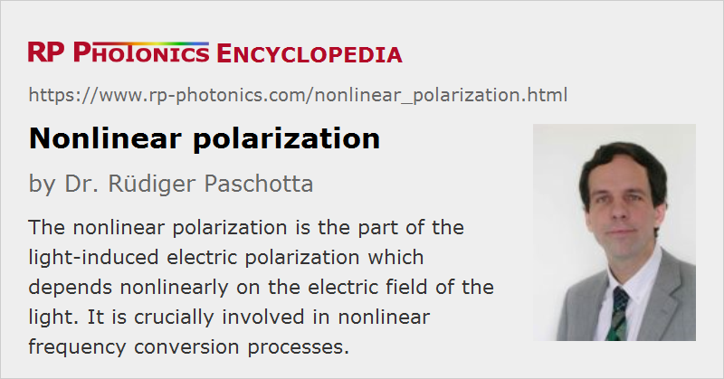

Nonlinear Polarization
Definition: the part of the light-induced electric polarization which depends nonlinearly on the electric field of the light
German: nichtlineare Polarisation
Categories: nonlinear optics, physical foundations
How to cite the article; suggest additional literature
Author: Dr. Rüdiger Paschotta
When light propagates in a transparent medium, its electric field causes some amount of electric polarization in the medium, i.e. some density of electric dipole moment. (This must not be confused with the polarization of the light field, which is the direction of its electric field.) That polarization propagates together with the electromagnetic field in the form of a polarization wave. Whereas at low light intensities the electric polarization is proportional to the electric field strength, nonlinear contributions become important at high optical intensities, as they can e.g. be produced with lasers.
Second-order Nonlinear Polarization
The second (lowest) order of nonlinear polarization can arise from a χ(2) nonlinearity which can occur only in crystal materials with a non-centrosymmetric crystal structure. (Nonlinear effects at crystal surfaces are an exception.) The nonlinear polarization then has a component which depends quadratically on the electric field of an incident light wave. More precisely, the tensor nature of the nonlinear susceptibility needs to be considered:
where Pi is the i-th Cartesian coordinate of the polarization, χ(2) is the nonlinear susceptibility, and E(t) is the optical electric field. More commonly, this is written as
with the nonlinear tensor d. Many tensor components can actually be zero for symmetry reasons, depending on the crystal class.
The nonlinear polarization contains frequency components which are not present in the exciting beam(s). Light with such frequencies can then be generated in the medium (→ nonlinear frequency conversion). For example, if the input field is monochromatic, the nonlinear polarization also has a component with twice the input frequency (→ frequency doubling). As the polarization has the form of a nonlinear polarization wave, the frequency-doubled light is also radiated in the direction of the input beam. Other examples are sum and difference frequency generation, optical rectification, parametric amplification and oscillation.
Third-order Nonlinear Polarization
The next higher order of nonlinear polarization can arise from a χ(3) nonlinearity, as it occurs in basically all media. This can give rise to various phenomena:
- The Kerr effect can be described as a nonlinear modification of the refractive index. It leads to phenomena such as self-phase modulation and cross-phase modulation, and also to Kerr lensing and four-wave mixing.
- A delayed nonlinear response is associated with Raman scattering and Brillouin scattering.
Phase Matching
In many cases, the nonlinear mixing products can be efficiently accumulated over a greater length of crystal only if phase matching is achieved. Otherwise, the field amplitudes at the exit face, generated at different locations in the crystal, essentially cancel each other, and the apparent nonlinearity is weak. Some nonlinear effects, however, are either automatically phase-matched (e.g. self-phase modulation) or do not need phase matching (e.g. Raman scattering).
Questions and Comments from Users
Here you can submit questions and comments. As far as they get accepted by the author, they will appear above this paragraph together with the author’s answer. The author will decide on acceptance based on certain criteria. Essentially, the issue must be of sufficiently broad interest.
Please do not enter personal data here; we would otherwise delete it soon. (See also our privacy declaration.) If you wish to receive personal feedback or consultancy from the author, please contact him e.g. via e-mail.
By submitting the information, you give your consent to the potential publication of your inputs on our website according to our rules. (If you later retract your consent, we will delete those inputs.) As your inputs are first reviewed by the author, they may be published with some delay.
Bibliography
| [1] | D. A. Kleinman, “Nonlinear dielectric polarization in optical media”, Phys. Rev. 126 (6), 1977 (1962), doi:10.1103/PhysRev.126.1977 |
See also: nonlinearities, nonlinear index, polarization waves, nonlinear crystal materials, nonlinear frequency conversion, phase matching
and other articles in the categories nonlinear optics, physical foundations
|  |
If you like this page, please share the link with your friends and colleagues, e.g. via social media:
These sharing buttons are implemented in a privacy-friendly way!